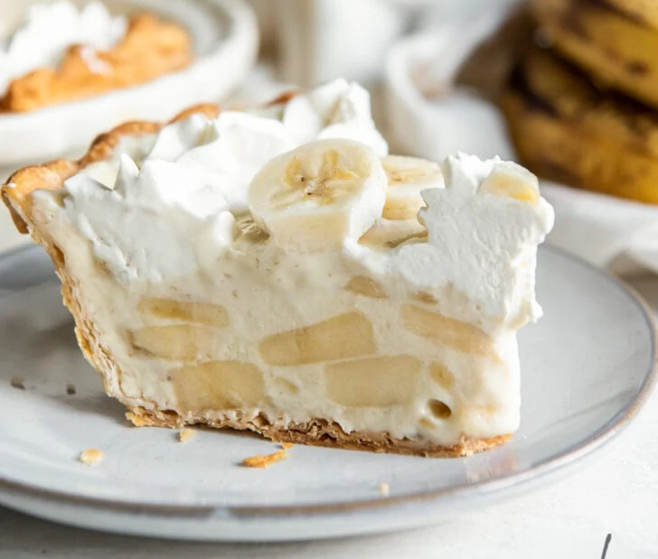

Simple Sally's Banana Cream Pie

Ingredients
- Great Value pie crust
- 1 box instant banana cream pudding (3.4oz)
- 3/4 cup milk
- 1 cup Cool Whip
- 3 Bananas
Instructions
- Slice 1 banana and layer bottom of crust
- Combine milk and pudding mix and whisk until thickened.
- Fold in 2/3 of Cool Whip.
- Mix 1 banana, sliced into filling.
- Add filling to pie crust and chill for 2 hours (for best results).
- Slice 1 banana and layer top of pie.
- Add remaining Cool Whip to top of pie and sprinkle graham cracker crumbs.